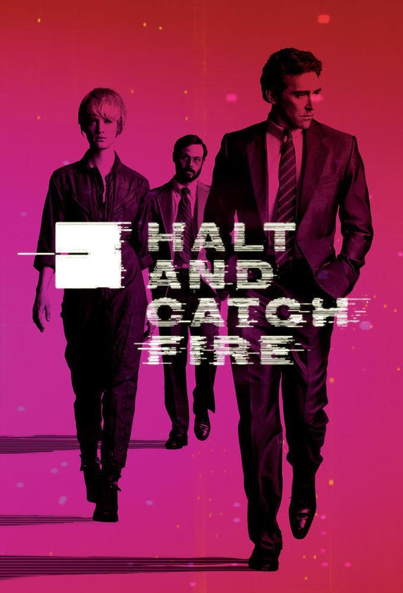
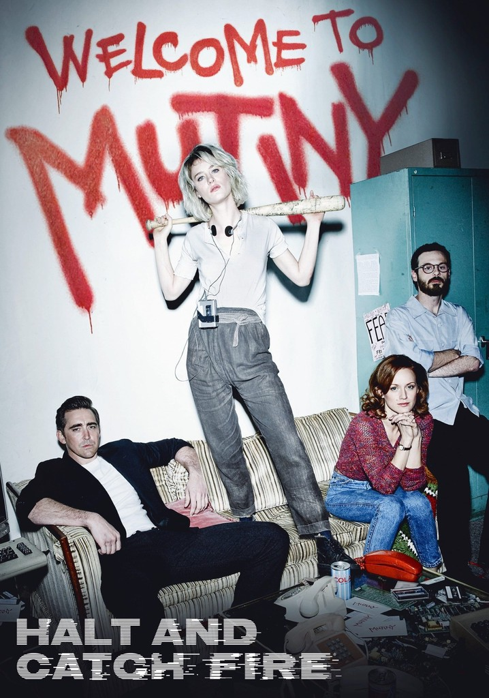
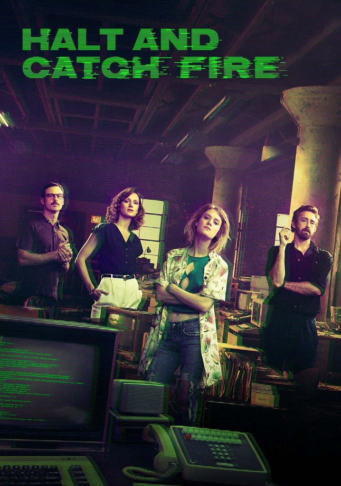

Temporada 1

La primera temporada se centra en el intento de Cardiff Electric de crear un clon del IBM PC. Joe MacMillan lidera el proyecto, reclutando a Gordon Clark y Cameron Howe. La temporada explora los desafíos técnicos, las luchas de poder y los sacrificios personales involucrados en la innovación.
Ver Episodios
Temporada 2

La segunda temporada sigue a Cameron y Donna mientras lanzan Mutiny, una de las primeras comunidades en línea. La temporada se adentra en el mundo de las startups, los juegos en línea y los desafíos de monetizar una plataforma digital, mientras Joe y Gordon exploran nuevos horizontes.
Ver Episodios
Temporada 3

La tercera temporada ve a Mutiny mudarse a Silicon Valley, donde se enfrentan a una competencia feroz y a los desafíos de escalar su negocio. La temporada explora temas de adquisición, la ética en la tecnología y las crecientes tensiones dentro del equipo.
Ver Episodios
Temporada 4

La última temporada salta a los primeros días de la World Wide Web. Los personajes principales, ahora más maduros, buscan su lugar en el nuevo panorama de Internet, explorando ideas como los motores de búsqueda y los portales web. Es una reflexión sobre el legado, la amistad y el impacto duradero de la tecnología en sus vidas.
Ver Episodios